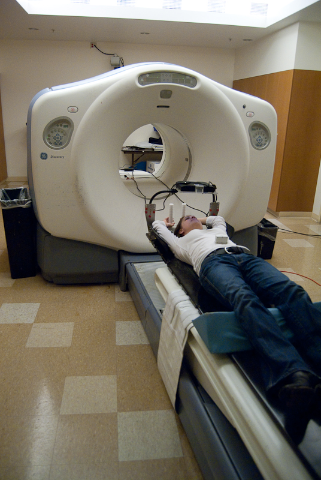
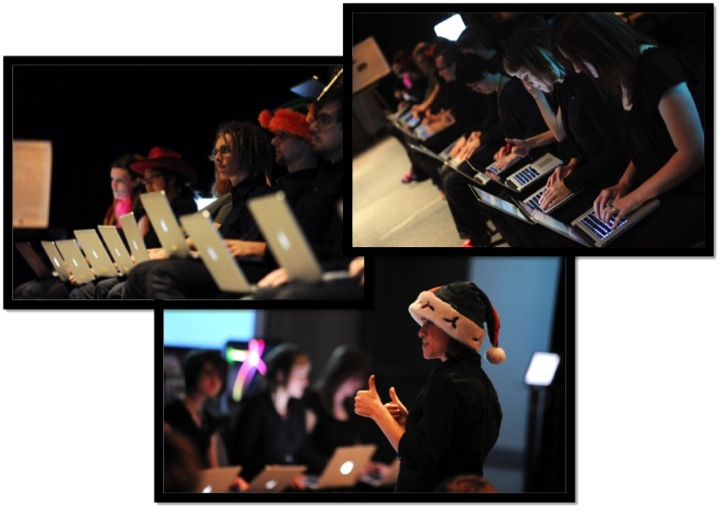

Hi. I'm Diana Siwiak.
Welcome to my professional portfolio.
Long-Term Goal:
for a technologist to achieve a sense of legitimate musicianship and for a musician to grasp high-level concepts of technology.
How do I do that?
Welcome to my professional portfolio.
for a technologist to achieve a sense of legitimate musicianship and for a musician to grasp high-level concepts of technology.
The feedback piano is a computer-controlled feedback loop that engages the piano strings as a sort of resonant memory. Any sound made in its vicinity will hang sustained in the air as it is slowly transformed. Here the feedback piano is set to a minimal amount of feedback so it only slightly colors the sound of the flute. Headphones are recommended
This was a final project presentation of a system I built using FSRs, an AVR microcontroller, and a Max/MSP patch. FSRs capture a pitch at my command. The patch plays a micro-tonal pitch based on FSR pressure. It's meant to be a controlled 'follow-the-leader', emulating the paradigm of the guitar pedal. Video is thanks to Michael Berger.
Inspired by spring time, In Green presents quiet layers of improvised and noise materials with calligraphy sketches in various shades of green. Voice and flute improvisation is mixed with soundscape recordings with some audio processing and diffused into 4 channels. The scans of non-text calligraphy drawings are filtered, colored, and layered in motion in HD video. The video & audio are counterpointed to be in & out of synchronicity & associations.
Medium by Mark Applebaum is a musical work for a quartet of any four instrumentalists or vocalists who rigorously interpret its score - a mercurial spray of pictographs whose precise definition as musical specifications is left entirely up to its performers. There are several mediums at play: the work is multimedia as it resides equally in the realms of visual art and music.
Crossovers by Alain Renaud is a multichannel structured networked improvisation for two dislocated performers. A graphic score indicates the location of the performers in each space and allows them to interact based on their physical location within the distributed virtual and physical spaces. The presence of the network and the two acoustically distinct spaces captured as ambisonic streams enhance the sonic space in which the performers interact.
Justin Yang wrote a piece for ensemble: tutti, duet, trio, solo, quartet. It is a simple graphic device that collects many people from many places into a single ensemble. The interface forms smaller groups from the large group. Performers play in intimate ensembles even though they may be on the other side of the planet from each other.
Prototype Audio & Visual Designer.
Prototype Interior Soundscape Designer.
See VoltFounder & Former Director.
 See LOrkASDoctor of Philosophy (2018) in Sonic Arts and Engineering through the New Zealand School of Music and the School of Engineering and Computer Science at Victoria University of Wellington under the guidance of Prof. Dale A. Carnegie, Dr. James W. Murphy, and Dr. Ajay Kapur.
Master of Arts (2012) in Media, Arts, and Science through the School of Arts, Media + Engineering at Arizona State University working under a National Science Foundation IGERT Doctoral Fellowship.
Master of Arts (2008) in Music, Science, Technology through the Center for Computer Research in Music and Acoustics at Stanford University under the guidance of Dr. Julius Orion Smith III.
Bachelor of Music (2005) in Flute Performance, Music Engineering Technology, and Computer Science through the Frost School of Music at University of Miami under the guidance of Ken Pohlmann and the late Christine Nield-Capote.
D. Siwiak, "MetaFlute: Developing Tools to Observe Micro-Timing and Physical Movements in Flute Playing," Doctoral Dissertation, Victoria University of Wellington.
2017D. Siwiak, D. A. Carnegie, J. Murphy, and A. Kapur, "Using Audio Onset Detection Algorithms," Proceedings of Engineering New Zealand Conference (ENZCON), Christchurch, New Zealand. December 4-7, 2017. pdf
D. Siwiak, D. A. Carnegie, and A. Kapur, "MetaFlute: A Wearable Interface for Gesture Detection," Proceedings of International Computer Music Conference (ICMC), Shanghai, China. October 16-20, 2017. pdf
2015D. Siwiak, A. Kapur, and D. A. Carnegie, "Micro-timing as a Feature for Investigating Musicality," Proceedings of International Symposium on Performance Science (ISPS), Kyoto, Japan. September 2 - 5, 2015. pdf
2014D. Siwiak, "Designing an Interactive Sonic Media Environment for Stroke Rehabilitation," Proceedings of Australasian Computer Music Conference (ACMC), Melbourne, Australia. July 9 - 11, 2014. pdf
D. Siwiak, A. Kapur, and D. A. Carnegie, "Music Technology's Influence on Flute Pedagogy: A Survey of their Intersection," Proceedings of the International Computer Music Conference (ICMC), Athens, Greece. September 14 - 20, 2014. pdf
2012D. Siwiak, "Laptop Orchestra of Arizona State: The Student Venture," Proceedings of Inaugural Symposium for Laptop Ensembles and Orchestras (SLEO), Baton Rouge, LA. April 14 - 17, 2012. pdf
2011D. Siwiak, N. Lehrer, M. Baran, Y. Chen, M. Duff, T. Ingalls, and T. Rikakis, "A Home-based Adaptive Mixed Reality Rehabilitation System," Proceedings of ACM Multimedia International Conference (ACM MM), Scottsdale, AZ. November 28 - December 1, 2011. pdf
Baran, M., Lehrer, N., D. Siwiak, Y. Chen, M. Duff, T. Ingalls, and T. Rikakis, "Design of a Home-based Adaptive Mixed Reality Rehabilitation System for Stroke Survivors," Proceedings of International IEEE EMBS Conference (EMBS), Boston, MA. August 30 - September 3, 2011. pdf
2010N. Lehrer, S. Rajko, D. Siwiak, D. Tinapple, I. Wallis, T. Koziupa, M. Chen, M. Baran, A. Kidane, D. Lorig, and L. Olson, "Thrii," Proceedings of ACM Multimedia International Conference (ACM MM), Firenze, Italy. October 25-29, 2010. pdf
K. Headlee, T. Koziupa, and D. Siwiak, "Sonic Virtual Reality Game: How Does Your Body Sound?" Proceedings of the New Interfaces for Musical Expression (NIME), Sydney, Australia. June 15-18, 2010. pdf
2009D. Siwiak, J. Berger, and Y. Yang, "Catch Your Breath - Musical Biofeedback for Breathing Regulation," Proceedings of the Audio Engineering Society (AES) 127th International Convention, New York, NY. October 9-12, 2009. pdf
D. Siwiak, J. Berger, and Y. Yang, "Catch Your Breath - Musical Biofeedback for Breathing Regulation," Proceedings of the International Conference on New Interfaces for Musical Expression (NIME), Pittsburgh, PA. June 4-6, 2009. pdf
D. Siwiak and F. James, "Designing Interior Audio Cues for Hybrid and Electric Vehicles," Proceedings of the Audio Engineering Society (AES) 36th International Conference, Dearborne, MI. June 2-4, 2009. pdf